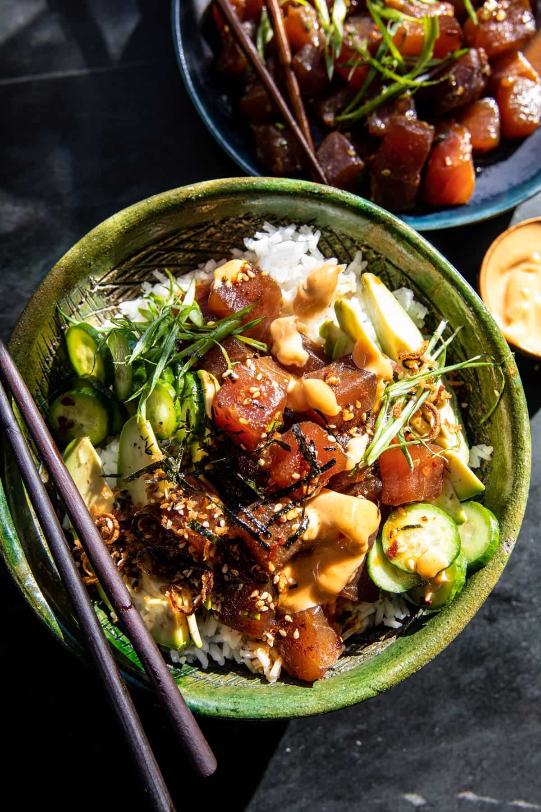

Poke Bowls

Description
This is my favorite recipe for poke bowls.
(Disclaimer - I have not actually tried this poke bowl recipe -
For any vegetarians or vegans I recommend sauteeing firm tofu in a mixture
of hoisin sauce, soy sauce and sriracha for a good protein substitute.)
Ingredients
- 2 (4 ounce) sushi grade tuna steaks, cubed
- 1/4 cup soy sauce or tamari
- 1 tablespoon sesame chili oil or regular sesame oil
- 2 teaspoons grated ginger
- 1 to 2 teaspoons crushed red pepper flakes
- 1/4 cup chopped green onions
- 1 tablespoon toasted sesame seeds
- 1 cup Persian cucumbers, sliced
- 1 tablespoon rice vinegar
- 1 teaspoon honey
- 3-4 cups sushi rice, cooked
- avocado, pickled ginger, and nori sheets for serving
- fried shallot crumbs
- 1/3 cup olive oil mayo
- 1 to 2 tablespoons sriracha
- 2 teaspoons soy sauce or tamari
- 1 teaspoon honey
Steps
- To make the poke. In a medium bowl, combine the tuna, soy sauce (or tamari), sesame chili oil, ginger, red pepper flakes, green onion, and sesame seeds. Toss to mix.
- To make the cucumber salad. Toss together the cucumbers, rice vinegar, honey, and a pinch each of chili flakes and salt.
- To make the Spicy Mayo. In a small bowl, stir together the mayo, sriracha, honey, and soy sauce (or tamari).
- To assemble, add the rice to bowls, top with avocado, cucumber salad, poke, pickled ginger, green onions, and nori. Spoon over the spicy mayo. Sprinkle on the crumbs. Serve with additional spicy mayo.